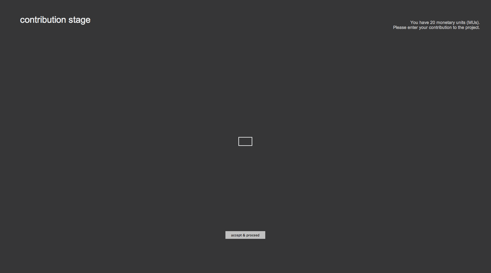

Below, we will first provide you with an overview and then a detailed description of the experiment.
You also find a shorter version of this instruction printed in front of you. But for now, please proceed with reading the instructions on this screen.
It is very important that you fully understand the structure and rules of the experiment.
Therefore, we ask you to read the following text carefully.
If anything is unclear to you, please raise your hand.
One of the instructors will then come to you and answer your question.
Please never ask a question aloud.
General Rules
Please switch off your mobile phone.
During the entire experiment, you are not allowed to talk with the other participants.
You can use the provided pen and sheets of paper to make notes during the experiment.
In the experiment you can earn money with the decisions you make. How much you earn will also depend on decisions by other participants.
The experiment consists of several Periods.
In the experiment, we will speak of Monetary Units (abbreviated as MU) instead of Euros.
Your total earnings consist of the sum of your MU earnings over all Periods.
At the end of the experiment, your total MU earnings will be converted to Euros at the exchange rate of 100 MUs = 2.50 euros. We will add a fixed show-up fee of 3 euros to this.
Instructions
You have been randomly assigned to a group of 5 people.
Hence, there are four other participants in your group.
They receive the same instructions as you, and the same rules apply to them.
Neither during nor after the experiment will you get to know the identity of the other people in your group,
nor will the other participants learn your identity.
Each of the other group members will be represented by one of the following symbols.
This symbol will identify the same group member across the whole experiment.
Each group member will have to make a contribution decision, which is described below.
Contribution decision
You and all other group members receive 20 MUs.
You will have to decide how many of these 20 MUs you keep and how many you contribute to a project.
You can choose any integer number between and including 0 and 20.
Each of the other group members also has to make this decision.
After all group members have made their contribution decision, you can see how much each group member contributed.
The sum of all contributions in the group will be multiplied by 1.5
This is the output of the project.
The output is distributed equally among all group members, irrespective of how much each member contributed.
Your earnings are the MUs you kept for yourself plus the MUs you receive from the project.
Consider the following hypothetical example.
For the examples, instead of the symbols presented above, we will use letters the letters A, B, C, D, E to denote members of this hypothetical group.
A decides to contribute 10 MUs and keep 10 MUs
B decides to contribute 3 MUs and keep 17 MUs
C decides to contribute 0 MUs and keep 20 MUs
D decides to contribute 17 MUs and keep 3 MUs
E decides to contribute 20 MUs and keep 0 MUs
Thus, the sum of all contributions to the project for this Period are:
sum of all contributions = 10 + 3 + 0 + 17 + 20 = 50 MUs
The sum of contributions is then multiplied by 1.5, giving the output of the project:
output of project = 1.5 * 50 = 75 MUs
Thus, each group member receives from the project:
each member's earnings from project = 75/5 = 15 MUs
The earnings for each group member are:
A: 10 MUs (kept to him/herself) + 15 MUs (from the project) = 25 MUs
B: 17 MUs (kept to him/herself) + 15 MUs (from the project) = 32 MUs
C: 20 MUs (kept to him/herself) + 15 MUs (from the project) = 35 MUs
D: 3 MUs (kept to him/herself) + 15 MUs (from the project) = 18 MUs
E: 0 MUs (kept to him/herself) + 15 MUs (from the project) = 15 MUs
After you and the all other group members have made your contribution,
you will see how much each group member contributed to the project,
the output of the project, and the earnings of each group member.
Earnings
Your earnings for the Period can be calculated with the following formula:
Your earnings = MUs kept to yourself + 1.5 * (sum of all MUs contributed to the project / 5)
We will now proceed to explain the computer interface.
Computer interface
To interact with the computer, you use the keyboard and the mouse.
At the time you will have to make your contribution decision, you will see the following screen on the computer:

By using the numbers from 0 to 9 on the keyboard you can indicate how much of your 20 MU you want to contribute to the project. As soon as you press a number, a bar will indicate how much you would contribute and how much you would keep for yourself.
To make your decision, you have click on 'accept & proceed'. As soon as you do this, you will not be able to change your decision.
Training
Before Period 1 starts we want to make sure that everybody has understood the rules correctly. Therefore, you will be asked a few comprehension questions on the computer. We will not proceed before everybody has answered all questions correctly.
If you have any questions, please raise your hand.
If you do not have any questions at the moment press the button below.